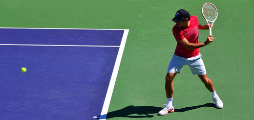

el tenis
El tenis es un juego que se juega en una cancha de forma rectangular, que puede ser una de las muchas superficies. Se juega con dos jugadores (partido individual) o cuatro jugadores (partido doble). Los jugadores se paran en lados opuestos de la red y usan una raqueta de cuerda para golpear la pelota de un lado a otro.
historia y origen
Si hablamos del origen del tenis, tenemos un antecedente muy remoto de este juego que se practicaba ya en Persia y Egipto seis siglos a. C., pero eso sí, con la salvedad de que se jugaba con la mano. Los griegos y también los romanos se aficionaron a este juego, y lo expandieron por todos los países del mar Mediterráneo.
Algunos historiadores autorizados, aseguran que los árabes lo jugaban en tiempos de Carlomagno en España, y existe documentación del 1300, alusiva a un juego semejante, el de la Boude.
Parece que el rey Luis X de Francia, murió de un enfriamiento tras una partida de tenis en 1316. A Carlos I de España, le entusiasmaba un juego de pelota muy parecido al tenis, practicado también en las cortes inglesa y francesa.
En Francia el jeu de paumeya, se jugaba en interior, y es el predecesor del tenis moderno. En un poema escrito en latín por un poeta elegiaco francés, donde se documenta este juego, se indica que el jugador que golpeaba la pelota gritaba: excipe = ¡tened!
Reglas del tenis
El jugador solo puede golpear la pelota una vez por turno.
El juego lleva una puntuación inusual: el primer punto se contabilizará como 15 puntos, el segundo como 30 puntos y el tercero como 40 puntos.
El partido se gana con 2 sets o con 3 sets dependiendo si se juega al mejor de 3 o al mejor de 5.
Explore